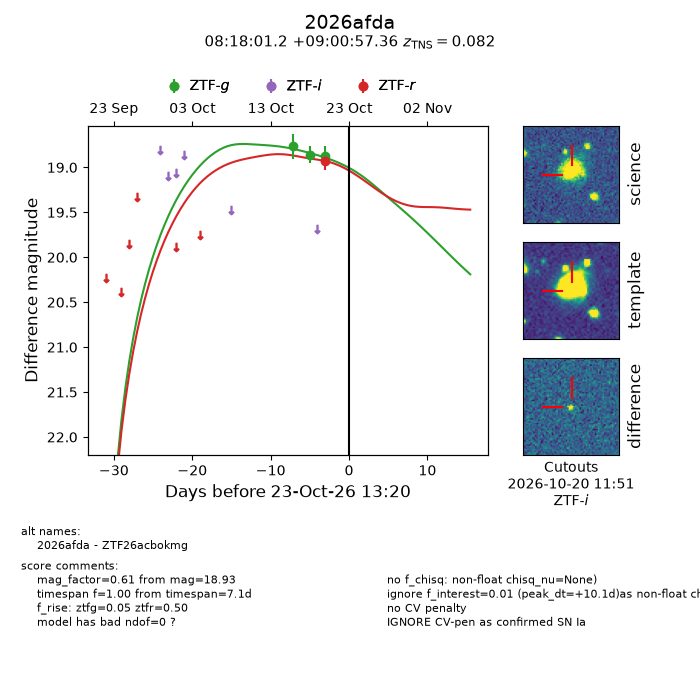
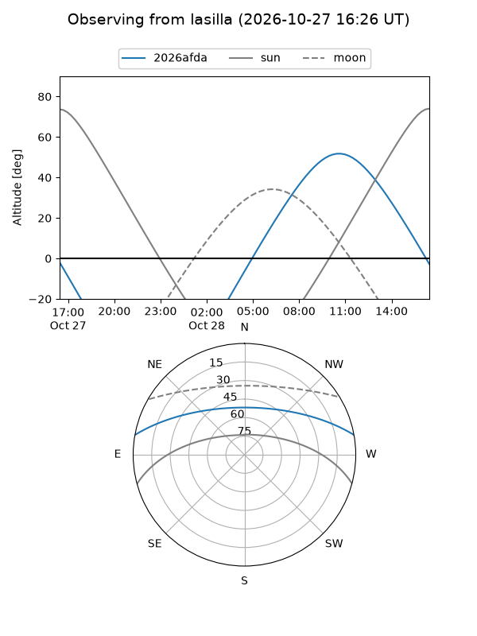
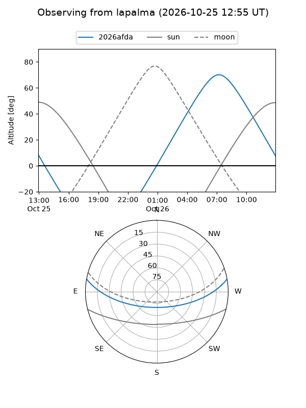
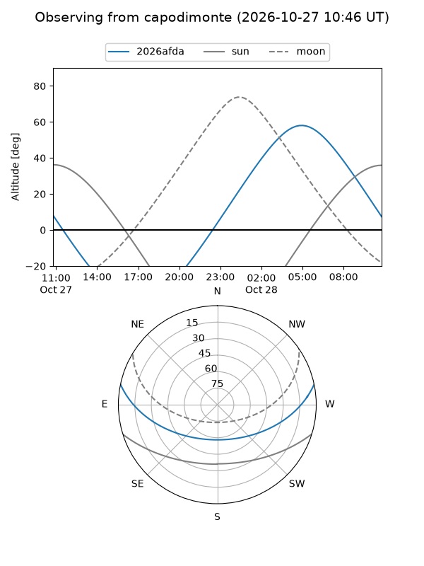
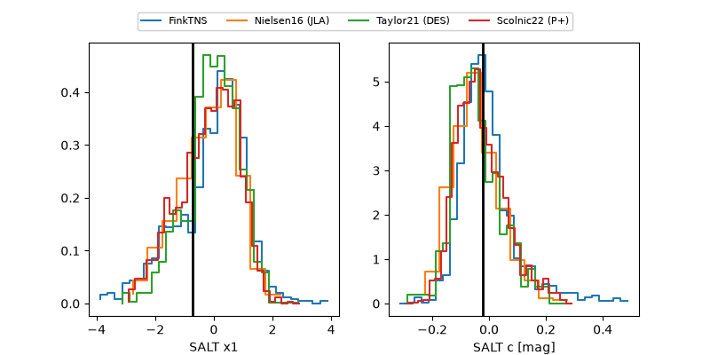

2026afda
Target 2026afda at 2026-10-23 13:22
Aliases and brokers:
FINK-ZTF: ztf.fink-portal.org/ZTF26acbokmg
Lasair-ZTF: lasair-ztf.lsst.ac.uk/objects/ZTF26acbokmg
ALeRCE-ZTF: alerce.online/object/ZTF26acbokmg
YSE-PZ: ziggy.ucolick.org/yse/transient_detail/2026afda
TNS name: wis-tns.org/object/2026afda
Direct TNS query: direct search
alt names
ZTF26acbokmg (ztf,fink_ztf)
2026afda (tns,yse)
Coordinates:
equatorial (ra, dec) = 124.5050,+9.01593
equatorial (HMS+DMS) = 08:18:01.19,+09:00:57.36
galactic (l, b) = (214.5947,+23.30864)
Flags:
TNS type: SN Ia
TNS redshift: 0.0820
peak dt: +10.1
Photometry:
last ztfg=18.87, ztfr=18.93
3 ztfg, 1 ztfr detections
Lightcurve

Visibility



Additional plots
